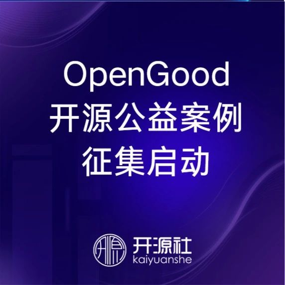

← Back to Archive
SeeDAO支持｜《OpenGood开源公益案例集》征集启动
作者: 梁尧
发布时间: 2024-09-28 02:46:47
OpenGood开源公益案例征集将于2024年10月11日截止。

开源的理念包含了开放平等地共享与协作，从而化共识为力量。而真正强大的共识，必是源自人们内心深处共通的情感。 通过开源，有助于使每个个体都有机会点燃自己的炬火，并且彼此照亮，相互温暖。愿大家将光与热汇聚，一起创造更多的欢笑与美好。
随着开源向越来越多的领域不断延展，我们希望再次关注到“开源公益”这一主题，推动开源与公益的双螺旋孕育出更多的花果。
希望此处所说的 开源公益， 不仅包括运用开源软硬件等开源技术开展社会公益，也包括运用开放协作等开源理念开展社会公益，既与技术公益有交叉，也与社会创新有结合，是广义的开源在公益领域的探索实践。 正如联合国教科文组织在其《开放科学建议书》中所言，开放科学是一项全球公益事业。
开源社长期致力于开源公益的实践与推广：2020年，举办以“开源向善 Open Source for Good ”为主题的中国开源年会，发布了倡导开源向善的《开源人宣言》，联合华东师大 X-lab、Datawhale 等社区发起的 Wuhan2020 项目入选2020年《中国信息技术公益发展白皮书》；2021年，在中国开源年会首次发起“开源公益”分论坛；2022年，在开源社内部正式成立开源公益工作组，并携手腾源会推出 WeOpen Good 开源公益计划；2023年，在开源社章程中新增“推动开源成为新时代的生活方式”的愿景，希望推动开源理念在公益等更广泛领域的推广，以及开始参与支持 CCF 公益工作委员会的技术公益工作。 今年，成立于2014年的开源社来到新的十年，希望在此发起《OpenGood开源公益案例集》的征集，以期挖掘并分享展示更多的开源公益案例，发挥开源公益的社会价值，提升开源公益的影响力，推动更多人关注并参与到开源公益的探索实践中。
征集范围： 运用开源理念或开源技术，开展社会公益的创新案例（不限于技术类案例，例如通过开放协作开展的社会创新案例）。
征集方式： 通过自荐或推荐的方式填写《开源公益案例征集表单》（扫描下方二维码或点击原文链接） 截止日期： 2024年10月11日
联系咨询： 梁尧，ly@kaiyuanshe.org
案例发布： 计划在第九届中国开源年会 COSCon'24 进行发布（2024.11.2-3，北京中关村会议中心），并通过相关平台或活动进行展示分享。 案例应用： 推动案例方对接公益、开源等领域相关组织，促进公益场景应用和技术需求支持，帮助案例项目的发展与推广。
（排名不分先后）诚邀更多同仁联系合作！
作者丨梁尧
编辑丨段延星
开源社（英文名称为“KAIYUANSHE”）成立于 2014 年，是由志愿贡献于开源事业的个人志愿者，依 “贡献、共识、共治” 原则 所组成的开源社区。开源社始终维持 “厂商中立、公益、非营利” 的理念 ，以 “立足中国、贡献全球，推动开源成为新时代的生活方式” 为愿景 ，以 “开源治理、国际接轨、社区发展、项目孵化” 为使命 ，旨在共创健康可持续发展的开源生态体系。
开源社积极与支持开源的社区、高校、企业以及政府相关单位紧密合作，同时也是全球开源协议认证组织 - OSI 在中国的首个成员。
自2016年起连续举办中国开源年会（COSCon），持续发布《中国开源年度报告》，联合发起了“中国开源先锋榜”、“中国开源码力榜”等，在海内外产生了广泛的影响力。